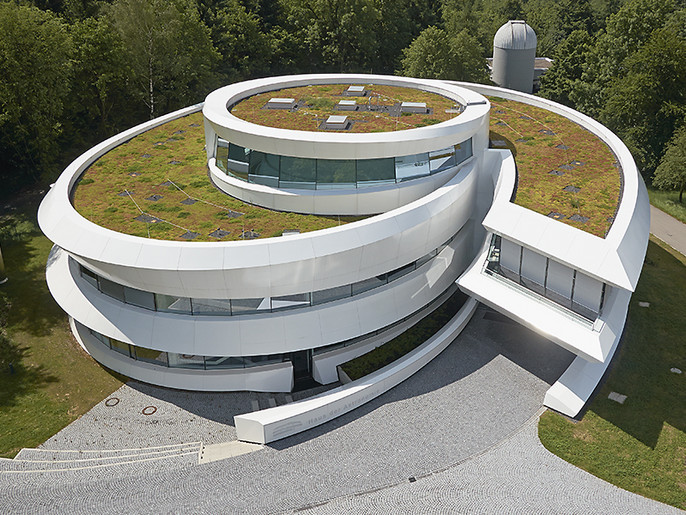

13-15 September 2022
Max Planck Institute for Astronomy, Heidelberg, Germany
Max Planck Institute for Astronomy, Heidelberg, Germany
GaiaUnlimited Community Workshop
The Gaia selection function and how to use the GaiaUnlimited tools
The Gaia selection function and how to use the GaiaUnlimited tools
The workshop's theme is the Gaia selection function and how to use it. This event will be a three-day workshop and unconference, where we will discuss and learn from each other about the finer details of the Gaia selection function and how to build and use it in various contexts. Participants will be working with the new GaiaUnlimited selection function tools, for which we will assist as needed, and we will improve them based on the feedback we'll receive. We hope this workshop could lead to some new collaborations or initial joint studies. We want to dedicate a significant amount of time to unconference sessions and informal discussions.
 This workshop is part of the GaiaUnlimited project that has received funding from the European Union’s Horizon 2020 research and innovation programme under grant agreement No 101004110.
This workshop is part of the GaiaUnlimited project that has received funding from the European Union’s Horizon 2020 research and innovation programme under grant agreement No 101004110.

The registration is closed.
Any provided personal data are processed in accordance with the Max Planck Institute for Astronomy privacy policy.
There are no registration fees to participate to this workshop.
The program is preliminary and will be updated soon.
The workshop will be held at the Haus der Astronomie (HdA) at MPIA in Heidelberg. HdA is the Center for Astronomy Education and Outreach in Heidelberg; more information about the center and its facilities and resources here.
HdA is accessible to disabled persons, and dedicated parking spaces are available. Unfortunately, the buses dedicated to the event and public transportations may not be accessible for everyone. However, there are specific taxi services in Heidelberg that we can arrange on-demand. Don't hesitate to contact us if you need any assistance or have any questions.
Note that mobile phone connectivity at/around the HdA is at best poor but usually non-existent.

Max Planck Institute for Astronomy
Königstuhl 17
69117 Heidelberg, Germany
The workshop will start at 09:00 on Tuesday, September 13 2022, and finish at 16:00 on Thursday, September 15 2022.
There will be a dedicated bus to bring participants from the town to the workshop venue (see details under travel below). Participants are responsible for organizing their travel to Heidelberg and should make their own accommodation arrangements (see below).
There is no conference fee. All events happening at the venue (coffee breaks, lunches, reception) are covered, but we cannot offer travel or lodging support.
If you need help with childcare arrangements, don't hesitate to contact us.
The workshop provides lunch and coffee breaks at the venue on all workshop days. Vegetarian options will be available (no need to pre-order). If you have any additional dietary requirements (and may not have indicated so in your registration form), please email Susanne Koltes-Al-Zoubi well in advance.
To foster interactions between participants, we will be providing a reception buffet dinner on Wednesday evening at the venue.
We will adapt the bus schedule accordingly.
We are committed to providing an accessible environment for all participants. If you need help or arrangements, don't hesitate to contact the organizers.
Participants will pay attention not to leave out information for some people in your audience. Some of us might not be able to see well, hear well, move well, speak well, or understand information presented in some ways well or at all. Everyone at the event will be open to diversity in the audience and any accessibility issues. The Web Accessibility Initiative provides some information & directions.
Participants are responsible for making their own accommodation arrangements. Heidelberg has plenty of hotel and Airbnb options; the following hotels are some suggestions (but we don't endorse any particular hotel).
don't hesitate to contact us if you have any questions.
This workshop is an in-person event. In addition, we will use:
You may need to apply for a visa to enter Germany. See this overview of visa requirements.
Feel free to contact the organizers if you need a letter of support.
While travel is now possible, there are still many continuously changing restrictions. We'll do our best to provide support and information.
Entry to Germany is limited to nationals from EU member states, Switzerland, Liechtenstein, Norway, Iceland, and those vaccinated with vaccines approved in Germany. Exceptions are possible for researchers and scientists, but we recommend checking with your local German embassy to confirm if these apply to you. Travelers are obligated to provide evidence of a negative COVID-19 PCR test and proof of vaccination or recovery upon entering the country. Additionally, MPIA and HdA are currently operating under 2G rules whereby only vaccinated (with a Germany-approved vaccine) or recovered individuals are allowed on the premises. We will continue to update this information, and please check with a German embassy for specific restrictions and visa requirements based on your location and citizenship.
We recommend flying to Frankfurt Airport (FRA), as this is the nearest international airport to Heidelberg. The following directions to Heidelberg assume that you are starting from Frankfurt.
Deutsche Bahn (DB) has connections from Frankfurt Airport (station: Frankfurt(M) Flughafen Fernbahnhof) to various train stations around Heidelberg (likely either Hauptbanhof or Altstadt, depending on where your hotel is). Typically you will take a train to Mannheim and change platforms there for the S-Bahn to Heidelberg. The total travel time is of the order of one hour. Tickets cost about 25 € each way. The timetable is available here. You can buy a ticket in advance, but we don't recommend the cheaper "saver" tickets, as these apply to the specific booked train -- You cannot use them on a different train if you have flight delays.
The two best shuttle options are Transfer & Limousine Service (TLS) (40 € each way) and Lufthansa Express Shuttle (25 € each way).
Deutsche Bahn (DB) has connections to various train stations around Heidelberg (likely either Hauptbanhof or Altstadt, depending on where your hotel is). Typically you will have a connection in Mannheim and change platforms there for the S-Bahn to Heidelberg. Trainline could also help you plan your journey across multiple countries and train companies.
Although there are no barier gates in Germany, you will need to buy a ticket before stepping into the trains. The controls are frequent. You can buy tickets online or at ticket machines or for S-Bahn (and local buses) on the eVRN app.
A cheaper but slower alternative is the "Flixbus" from the airport to Heidelberg. The prices range from 5 to 15 € each way, but depending on the time of day, the trip could take up to three hours due to stops and traffic. To investigate timetables and book tickets, you can check out the Flixbus website.
If you decide to rent a car and drive, you can follow these directions (to MPIA).
There will be a shuttle to transport participants from the town center up the hill to MPIA/HdA every morning. It will leave from Hotel NH on Alte Eppelheimer Strasse (back of the hotel) at 08:15 (bus/company name "discipulus"). It will then stop briefly to pick up at Peterskirche (the stop on the south side of the road, i.e., the one closest to the hill) at 08:20 (the bus might only arrive five minutes later here, but be there no later than 08:20 as the bus cannot wait). A local participant will be at each pick-up point and travel on the bus. A bus will bring participants back into town (the same two stops) after each day's workshop.
At other times of the day, you can take Bus 30 - the "Science Bus" - up to MPIA (the bus will drop you off right outside HdA) or back down the hill (you probably want to get off at Peterskirche). A map of the entire bus/tram network is here (the MPIA is slightly below and right of the center). You can buy tickets online or at ticket machines or (if that fails) from the driver on the bus (the cost is approximately 2.50 € each way) or on the eVRN app. Note that where the Science Bus departs - Universitätsplatz - to go up to MPIA is not far from Peterskirche. There is also a taxi stand near there if all else fails.
The easiest way to explore Heidelberg is by foot. The Rhein-Neckar-Verkehr (RNV) provides public transportation in Heidelberg with buses and trams; these can take you more or less anywhere you want to go within the city. The timetables can be found online; you can also download various apps to help you plan, e.g., the official RNV app (in german) or the RNV Ticket app, and the eVRN app (in English). Note that Google Maps can also provide bus schedules.
During the community workshop, we require participants to follow the code of conduct for the workshop which can be found below. If you have any questions about the workshop, you can reach the organizing committee.
The organizers are dedicated to providing a harassment-free conference experience for everyone, regardless of gender, gender identity and expression, age, sexual orientation, disability, physical appearance, body size, race, ethnicity, religion (or lack thereof), or technology choices. We do not tolerate harassment, abusive behavior, or intimidation of conference participants in any form. As such, we follow the European Astronomical Society Council (EAS) Ethics Statement and Guidelines for Good Practice and expect all participants to read and abide by their statements.
In addition to a general Code of Conduct and Ethics, all participants must agree with our collaboration policy: i.e., to openly share their ideas, expertise, code, and interim results. Project development will proceed out in the open among participants.
Participants are encouraged to change gears, start new collaborations, and drop or combine projects. Any participant contributing significantly to a project can expect appropriate credit vessels (e.g., co-authorship).
We pledge to help the entire community follow the code of conduct, and to not remain silent when we see violations of the code of conduct. We will take action when members of our community violate this code such as notifying a workshop organizer or talking privately with the person. This code of conduct applies to all community situations online and offline, including the conference itself, mailing lists, forums, social media, social events associates with the conference, and one-to-one interactions.
Participants asked to stop any harassing behavior are expected to comply immediately. Attendees violating these rules may be asked to leave the event at the sole discretion of the conference organizers.